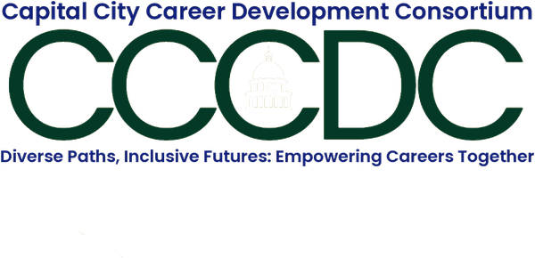

Curriculum design
For colleges, public agencies, and community programs
We'll build career curriculum that fits your audience, your setting, and what you want people to walk away with.
National Certified Counselor · Certified Career Counselor
I partner with organizations across Sacramento to build career programs, curriculum, and learning experiences that expand opportunity, confidence, and choice.
"A fulfilling career is not about making a living, it's about making a life."
I'm Alina Quintana, a National Certified Counselor and Certified Career Counselor based in Sacramento, California.
I help organizations create culturally informed career programs and resources that reflect people's identities, lived experiences, and values. My work brings together career development, curriculum design, facilitation, and a commitment to more equitable pathways to mobility.
In 2027, I'll open my practice to a limited number of individuals seeking career guidance that honors identity and culture.

Occasional notes on career mobility, culture, and building a working life on your own terms.
Beginning in Q3 of 2027, I will open my practice to a small number of individual clients seeking career guidance that honors identity, culture, lived experience, and values. This work supports people in making intentional decisions, building agency, and shaping futures that feel aligned and meaningful.
Join the 2027 interest list →I partner with organizations to design culturally informed and equity-centered career development curriculum. My approach strengthens community agency, expands access to opportunity, and supports learners in navigating work, advancement, and identity with intention. Curriculum can be adapted for programs, training, public sector initiatives, or community-based organizations.
I facilitate workshops on topics related to career development, culture, and agency, with a focus on equity and first-generation experiences. Workshops are designed to create insight, reflection, and practical tools for participants while strengthening community connection and shared learning.
I speak on the intersections of career, culture, labor, first-generation identity, and economic mobility. My talks invite audiences to rethink how careers are shaped and how communities build agency through work, lineage, and self-determined futures.
Tell me what you're building
and how I can help.
National Certified Counselor · Certified Career Counselor
I partner with organizations across Sacramento to build career programs, curriculum, and learning experiences that expand opportunity, confidence, and choice.
A fulfilling career is not about making a living, it's about making a life.
I'm Alina Quintana, a National Certified Counselor and Certified Career Counselor based in Sacramento, California.
I help organizations create culturally informed career programs and resources that reflect people's identities, lived experiences, and values. My work brings together career development, curriculum design, facilitation, and a commitment to more equitable pathways to mobility.
In 2027, I'll open my practice to a limited number of individuals seeking career guidance that honors identity and culture.
Beginning in Q3 of 2027, I will open my practice to a small number of individual clients seeking career guidance that honors identity, culture, lived experience, and values. This work supports people in making intentional decisions, building agency, and shaping futures that feel aligned and meaningful.
Join the 2027 interest list →I partner with organizations to design culturally informed and equity-centered career development curriculum. My approach strengthens community agency, expands access to opportunity, and supports learners in navigating work, advancement, and identity with intention. Curriculum can be adapted for programs, training, public sector initiatives, or community-based organizations.
I facilitate workshops on topics related to career development, culture, and agency, with a focus on equity and first-generation experiences. Workshops are designed to create insight, reflection, and practical tools for participants while strengthening community connection and shared learning.
I speak on the intersections of career, culture, labor, first-generation identity, and economic mobility. My talks invite audiences to rethink how careers are shaped and how communities build agency through work, lineage, and self-determined futures.
Those I build with
Occasional notes on career mobility, culture, and building a working life on your own terms.
Tell me what you're building and how I can help.
Sacramento · Career development consulting
If you're building something for your students, your staff, or your community, I'll help you shape it — curriculum, workshops, and sessions that take identity and lived experience seriously.
Who I've worked with
Working together
Start with one piece, or we can build something larger together.
For colleges, public agencies, and community programs
We'll build career curriculum that fits your audience, your setting, and what you want people to walk away with.
For cohorts, teams, and first-generation initiatives
I facilitate sessions that make room for honest reflection and send people out with something they can use the next day.
For conferences, campuses, and community events
I speak about career, culture, labor, first-generation identity, and what economic mobility really asks of people.
Not sure which one fits? Tell me what you're working on and we'll figure it out together.
A little about me
I'm a National Certified Counselor and Certified Career Counselor based in Sacramento, California. My work brings together career development, curriculum design, and facilitation, all pointed at the same thing: making the path to a good living less dependent on who you already know.
In 2027, I'm opening my practice to a small number of individuals who want career guidance that takes their identity, culture, and values seriously. If that sounds like you, I'd love to hear from you.
alina quintana Join the 2027 interest list →A fulfilling career is not about making a living, it's about making a life.
alina quintanaFrom my desk
Every so often I write about career mobility, culture, and building a working life on your own terms. No schedule, no filler.
Let's talk
Tell me who you're serving, what you hope they walk away with, and the kind of support you have in mind. I'll get back to you about fit and next steps.